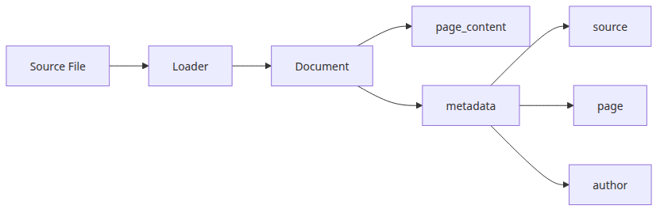
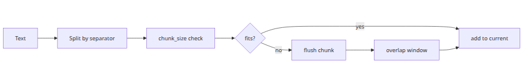
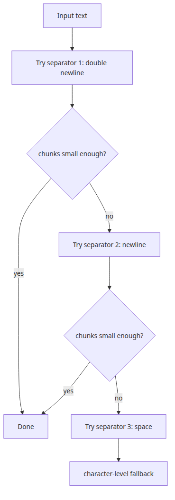
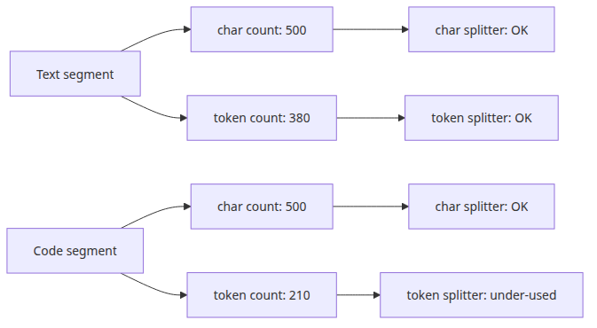
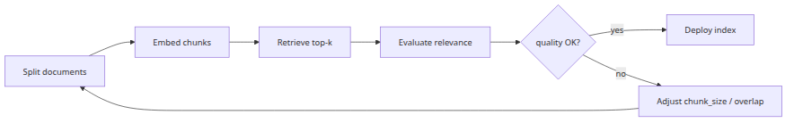

RAG Deep Dive series (1/6)
All code citations in this post are pinned to langchain-ai/langchain @ v0.2.17.
When a RAG system underperforms, teams often blame the index first and the retriever second. In practice, the first failure usually happens earlier. It happens when you decide what counts as one document, where you cut it, how much context you keep on each side, and what metadata survives the ingest path. If those decisions are wrong, the vector index does not fix them. It only stores the already-broken pieces, and the retriever faithfully returns the nearest broken piece.
That is why this series starts with loading and chunking rather than embeddings. In a production RAG pipeline, chunking is not a preprocessing footnote. It is where you decide whether evidence stays intact long enough to be found later. This post reads the LangChain source directly to make that claim concrete. The scope is langchain_community.document_loaders plus langchain_text_splitters, with attention on TextLoader, PDFMinerLoader, UnstructuredFileLoader, CharacterTextSplitter, RecursiveCharacterTextSplitter, and TokenTextSplitter.
A retriever can only search what the ingest pipeline preserved. If the answer to a user question spans a heading and the following paragraph, but those two pieces were split into separate chunks with weak overlap, retrieval may return the heading without the explanation or the explanation without the subject. The index is working. The retriever is working. The chunking strategy failed first.
This shows up in several common forms. Policy documents lose the exception clause because it spilled into the next page. API references lose the rate-limit note because the endpoint heading and the limit paragraph were separated. Source code loses the guard condition because the function signature and the error branch no longer live in the same chunk. Once the original semantic unit has been severed, downstream ranking can only choose among incomplete candidates.
The operating principle for this post is simple: chunking is a meaning-preservation problem before it becomes a storage problem. To see why, we need to start at the loader boundary.
In LangChain, a loader does two things. First, it reads bytes from somewhere. Second, it emits one or more Document(page_content=..., metadata=...) objects. That second step matters more than it first appears to. The splitter, vector store, retriever, and often the citation layer all inherit the loader's original decision about document boundaries and metadata.

Start with the simplest case. In text.py, TextLoader.lazy_load() opens the file, reads it into one string, and yields a single Document with metadata = {"source": str(self.file_path)}. If decoding fails and autodetect_encoding=True, it retries the candidate encodings returned by detect_file_encodings. The source-level quirk in 0.2.17 is that exhausting those candidates is not surfaced cleanly as an error in every path. The method can fall through with text still empty and then yield a Document with empty page_content. In other words, the default metadata surface for plain text is basically just source, and the default boundary is “the whole file.”
PDFMinerLoader is more interesting because the loader class itself delegates the important part to a parser. In pdf.py, PDFMinerLoader wires up PDFMinerParser. The actual boundary logic sits in parsers/pdf.py. PDFMinerParser.lazy_parse() does one of two things:
concatenate_pages=True, it extracts the full PDF into one text blob and emits one Document with metadata={"source": blob.source}concatenate_pages=False, it emits one Document per page with metadata={"source": blob.source, "page": str(i)}That single configuration choice changes the starting point for every later chunk. One option preserves cross-page context better. The other preserves page identity better for citation and debugging.
UnstructuredFileLoader goes even further, with one important caveat first. In the 0.2.17 source this class is a compatibility shim marked @deprecated(since="0.2.8", removal="1.0", alternative_import="langchain_unstructured.UnstructuredLoader"). For new code, the recommended import is langchain_unstructured.UnstructuredLoader. The source is still worth reading, though, because it explains the behavior many existing pipelines still rely on. In unstructured.py, UnstructuredBaseLoader.lazy_load() branches by mode. mode="single" joins all elements with double newlines into one Document. mode="elements" yields one Document per element and can carry element.metadata.to_dict(), category, and element_id. mode="paged" regroups elements by page number, but in 0.2.17 it also emits a deprecation warning in favor of chunking_strategy="by_page". The practical difference is huge. For a structured policy document, elements can preserve section boundaries and titles far better than raw text extraction, but it also produces many more units and more metadata noise.
Here is a realistic ingest snippet that uses all three patterns in one corpus.
from pathlib import Path
# deprecated since langchain 0.2.8 — use langchain_unstructured.UnstructuredLoader instead
from langchain_community.document_loaders import (
PDFMinerLoader,
TextLoader,
UnstructuredFileLoader,
)
def load_corpus(base_dir: Path):
docs = []
docs.extend(
TextLoader(
base_dir / "announcements" / "release-note.txt",
encoding="utf-8",
autodetect_encoding=True,
).load()
)
docs.extend(
PDFMinerLoader(
str(base_dir / "manuals" / "oncall-runbook.pdf"),
concatenate_pages=False,
).load()
)
docs.extend(
UnstructuredFileLoader(
str(base_dir / "policies" / "security-policy.docx"),
mode="elements",
strategy="fast",
).load()
)
for doc in docs[:5]:
print(doc.metadata)
return docs
if __name__ == "__main__":
corpus = load_corpus(Path("sample_data"))
print(f"loaded documents: {len(corpus)}")
The operational lesson is straightforward. Before tuning chunk_size, inspect the loader boundary. If the loader has already frozen page boundaries, stripped structure, or split titles away from body text, later chunking can only work within that damage.
TextSplitter actually builds chunksMost high-level explanations say that CharacterTextSplitter splits on a separator and then stops there. The source says otherwise. In character.py, CharacterTextSplitter.split_text() first breaks the input into smaller pieces through _split_text_with_regex(). The final chunk boundaries are then decided by TextSplitter._merge_splits() in base.py. That merge stage is where chunk_size, chunk_overlap, and length_function interact.

The base constructor defaults are:
chunk_size=4000chunk_overlap=200length_function=lenkeep_separator=Falseadd_start_index=FalseTwo details matter a lot in practice.
First, chunk_overlap does not mean “each chunk overlaps the previous one by exactly N characters.” _merge_splits() accumulates split pieces inside current_doc until adding the next piece would cross _chunk_size. At that point it finalizes the current chunk, then repeatedly pops items from the front while total > self._chunk_overlap or while the upcoming item still would not fit. Because the algorithm works on already-split units rather than a raw character stream, the realized overlap depends on the shape of those units. If your separator yields paragraph-sized pieces, overlap can be much coarser than you expected.
Second, length_function is not a cosmetic hook. It changes the governing metric of the merge algorithm. With the default len, the splitter counts characters. If you substitute a tokenizer-based function, the exact same content will merge differently because the budget is no longer character length but model token length. This matters whenever character count is a poor proxy for context cost, which is common for multilingual text, JSON-heavy content, logs, or anything dense with identifiers.
There is one more method worth keeping in view: create_documents(). If add_start_index=True, it computes a search offset and stores metadata["start_index"] for each emitted chunk. That is useful for later citation mapping or debugging. The implementation relies on text.find(chunk, max(0, offset)), so if the same string repeats multiple times and overlap is involved, it is wise to verify that the recovered offset still matches what your citation layer expects.
This small script makes the interaction visible.
from langchain_text_splitters import CharacterTextSplitter
text = """Incident summary
The payment worker retries a failed task three times.
If all retries fail, the message moves to the dead-letter queue.
Operators must inspect the original payload and the exception chain.
"""
splitter = CharacterTextSplitter(
separator="\n",
chunk_size=80,
chunk_overlap=20,
length_function=len,
add_start_index=True,
)
documents = splitter.create_documents([text], metadatas=[{"source": "runbook"}])
for index, doc in enumerate(documents, start=1):
print(f"chunk {index}")
print(doc.metadata)
print(doc.page_content)
print("-" * 40)
If you run it, you will notice that overlap feels irregular rather than exact. That is not a bug. It is a direct consequence of LangChain's split-then-merge design.
RecursiveCharacterTextSplitter became the default choiceRecursiveCharacterTextSplitter is widely used not because it is magical, but because its failure mode is relatively gentle. In character.py, the default separator priority is [
"\n\n", "\n", " ", ""]. In plain terms: try paragraph breaks first, then line breaks, then spaces, and only then fall all the way back to character-level splitting.

The _split_text() method is the whole story:
_chunk_size in _good_splits_merge_splits()This is a conservative strategy. Preserve larger semantic boundaries when possible, and only degrade into finer cuts when the content forces you to. A markdown document with healthy blank lines will mostly split at "\n\n". A log file without paragraph breaks will fall to "\n". OCR output with broken line handling may slide all the way down to spaces or even characters.
Another important default sits in the constructor: keep_separator=True. That differs from CharacterTextSplitter, whose base default is False. In recursive splitting, keeping separators means line breaks and paragraph markers survive inside the emitted text. That small choice often improves retrieval quality because headings, bullets, and local formatting still signal structure to the embedding model.
Here is a minimal markdown example.
from langchain_text_splitters import RecursiveCharacterTextSplitter
markdown_text = """# Service policy
## Password reset
Users can reset passwords from the account settings page.
The reset link expires after 15 minutes.
## API rate limit
The public API allows 120 requests per minute per API key.
Burst requests above the limit receive HTTP 429 responses.
"""
splitter = RecursiveCharacterTextSplitter(
chunk_size=120,
chunk_overlap=30,
)
chunks = splitter.split_text(markdown_text)
for index, chunk in enumerate(chunks, start=1):
print(f"chunk {index}\n{chunk}\n")
That is why RecursiveCharacterTextSplitter is such a good default for mixed prose. It does not guarantee perfect semantic chunks, but it tends to preserve the most natural boundaries available before it gives up and cuts harder. The caveat is just as important: for highly structured content such as code, HTML, legal text, or machine-generated data, the default separator list is only a starting point. Domain-aware separators or pre-normalization often outperform the stock behavior.
Character count and token count are not the same thing, and language models only care about the second one. That mismatch is one of the easiest ways to create a RAG system that looks healthy during ingest and then fails when the final prompt is assembled.

LangChain's TokenTextSplitter addresses this directly. In base.py, TokenTextSplitter.split_text() builds an internal _encode() function, creates a Tokenizer dataclass with tokens_per_chunk=self._chunk_size and chunk_overlap=self._chunk_overlap, and then delegates to split_text_on_tokens(). That helper slides a fixed-width window over token IDs by advancing start_idx += tokenizer.tokens_per_chunk - tokenizer.chunk_overlap on each iteration.
This is a very different overlap model from CharacterTextSplitter. Here, overlap is enforced directly in token space rather than emerging indirectly from already-split text fragments. The result is more predictable against model context limits, but less aligned with semantic boundaries. Token windows do not know where a paragraph ends or where a heading begins.
That trade-off is the point. TokenTextSplitter is not inherently “better” at preserving meaning. It is better at respecting the resource the model actually consumes. In production, that makes it valuable in at least two cases: when your chunks are later repacked into larger prompt bundles, and when your corpus mixes languages or symbol-heavy content where character count is a bad cost estimate.
This example compares character-based and token-based splits over the same sentence.
import tiktoken
from langchain_text_splitters import CharacterTextSplitter, TokenTextSplitter
text = "Customer 18423 did not fail because of HTTP 429. The real cause was an internal batch worker that retried without exponential backoff."
encoding = tiktoken.get_encoding("cl100k_base")
char_splitter = CharacterTextSplitter(
separator=" ",
chunk_size=30,
chunk_overlap=5,
)
token_splitter = TokenTextSplitter(
encoding_name="cl100k_base",
chunk_size=18,
chunk_overlap=4,
)
char_chunks = char_splitter.split_text(text)
token_chunks = token_splitter.split_text(text)
print("character-based")
for chunk in char_chunks:
print(len(chunk), len(encoding.encode(chunk)), chunk)
print("token-based")
for chunk in token_chunks:
print(len(chunk), len(encoding.encode(chunk)), chunk)
On multilingual text, logs, code, and text dense with identifiers, the gap between character length and token length gets wider fast. That is why a system can appear safe at ingest time and still blow the budget when it concatenates several retrieved chunks at answer time. If you want predictable prompt budgets, token-aware measurement has to show up somewhere in the design.
There is no universal best chunk size. There are only chunk sizes that are better or worse for a domain, a model budget, and a question style. The most common mistake is applying one number everywhere, such as chunk_size=1000 and chunk_overlap=200, across policy documents, API docs, legal contracts, logs, and source code.

In practice, I look at three things together.
First, can a chunk stand on its own as evidence? A useful chunk should contain the definition, condition, or exception that a model would need to answer a question without guessing. Second, is the chunk so large that it smears neighboring topics into one embedding? Bigger chunks preserve context, but they also dilute specificity. Third, does overlap produce meaningful continuity or only repeated noise?
An easy starting metric is the configured overlap ratio:
overlap_ratio = chunk_overlap / chunk_size
That is not enough on its own, because actual overlap in emitted chunks may differ from configured overlap, especially with recursive or separator-based splitters. It is more useful to pair the configured ratio with observed token-length distributions and a small question set that tells you whether answer-bearing evidence usually lives inside one chunk or spills across several.
My rough defaults are domain-shaped rather than model-shaped:
This script is a lightweight way to inspect token lengths and configured overlap together.
from statistics import mean
import tiktoken
from langchain_text_splitters import RecursiveCharacterTextSplitter
def measure_chunks(texts):
chunk_size = 700
chunk_overlap = 120
splitter = RecursiveCharacterTextSplitter(
chunk_size=chunk_size,
chunk_overlap=chunk_overlap,
)
encoding = tiktoken.get_encoding("cl100k_base")
chunks = []
for text in texts:
chunks.extend(splitter.split_text(text))
token_lengths = [len(encoding.encode(chunk)) for chunk in chunks]
overlap_ratio = chunk_overlap / chunk_size
print(f"chunks: {len(chunks)}")
print(f"configured overlap ratio: {overlap_ratio:.2f}")
print(f"avg tokens per chunk: {mean(token_lengths):.1f}")
print(f"max tokens per chunk: {max(token_lengths)}")
print(f"min tokens per chunk: {min(token_lengths)}")
if __name__ == "__main__":
documents = [
"Service owners must rotate secrets every 90 days. Emergency exceptions require security approval.",
"API clients that exceed the quota receive HTTP 429 and should retry with exponential backoff.",
]
measure_chunks(documents)
This is still not enough by itself. The final judge is retrieval behavior against representative questions. But once you understand the source-level mechanics, you can at least explain why a given configuration behaved the way it did, instead of tuning chunk sizes by superstition.
The first part of a RAG pipeline is built from relatively small pieces of code. TextLoader mostly gives you one document per file plus source metadata, but its autodetected encoding fallback has a real 0.2.17 quirk when all candidates fail. PDFMinerLoader can either preserve page identity or flatten it away, depending on concatenate_pages. UnstructuredFileLoader, itself a deprecated compatibility shim in this release line, can promote document structure into element-level metadata. Above that, CharacterTextSplitter and RecursiveCharacterTextSplitter create chunks through a split-then-merge strategy, while TokenTextSplitter redefines the budget in model-token terms.
That baseline matters because the vector index is not neutral. It geometrizes the document units produced by the loader and the splitter. In episode 2, we will follow that geometry into embeddings and FAISS IndexFlatL2, and look at how chunk boundaries become retrieval behavior.
TextSplitter base sourceCharacterTextSplitter and RecursiveCharacterTextSplitter sourceTextLoader sourceUnstructuredFileLoader sourceDocument base type